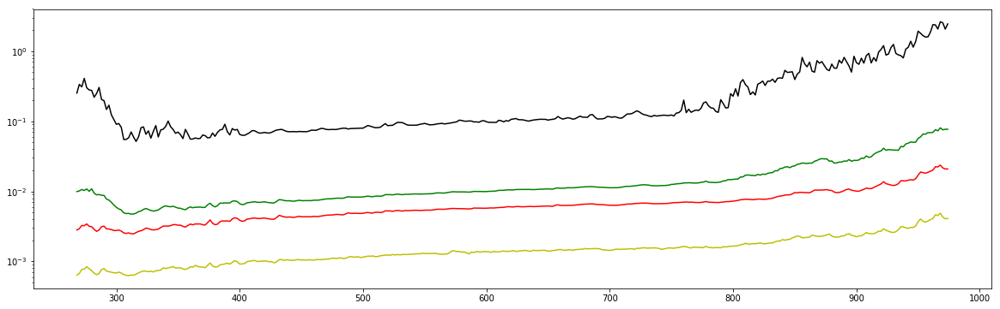

Coordinate Reference System
Inhalt
Coordinate Reference System¶
CRS from vts-registry/srs.json at master · Melown/vts-registry
#CRS from https://github.com/Melown/vts-registry/blob/master/registry/registry/srs.json
mercury_crs = {
"geographic-dmercury2000": {
"comment": "Geographic, DMercury2000 (iau2000:19900)",
"srsDef": "+proj=longlat +a=2439700 +b=2439700 +no_defs",
"type": "geographic"
},
"geocentric-dmercury2000": {
"comment": "Geocentric, Mercury",
"srsDef": "+proj=geocent +a=2439700 +b=2439700 +lon_0=0 +units=m +no_defs",
"type": "cartesian"
},
"eqc-dmercury2000": {
"comment": "Equidistant Cylindrical, DMercury2000 (iau2000:19911)",
"srsDef": "+proj=eqc +lat_ts=0 +lat_0=0 +lon_0=0 +x_0=0 +y_0=0 +a=2439700 +b=2439700 +units=m +no_defs",
"type": "projected"
},
"merc-dmercury2000": {
"comment": "Mercator, DMercury2000 (iau2000:19974)",
"srsDef": "+proj=merc +lon_0=0 +k=1 +x_0=0 +y_0=0 +a=2439700 +b=2439700 +units=m +no_defs",
"type": "projected"
},
"steren-dmercury2000": {
"comment": "Polar Sterographic North, DMercury2000 (iau2000:19918)",
"srsDef": "+proj=stere +lat_0=90 +lat_ts=90 +lon_0=0 +k=1 +x_0=0 +y_0=0 +a=2439700 +b=2439700 +units=m +no_defs",
"type": "projected"
},
"steres-dmercury2000": {
"comment": "Polar Stereographic South, DMercury2000 (iau2000:19920)",
"srsDef": "+proj=stere +lat_0=-90 +lat_ts=-90 +lon_0=0 +k=1 +x_0=0 +y_0=0 +a=2439700 +b=2439700 +units=m +no_defs",
"type": "projected"
}}
import geopandas as gpd
from shapely.geometry import Polygon
import fiona
import numpy as np
import pandas as pd
import matplotlib
from matplotlib import pyplot as plt
%matplotlib inline
# from tqdm import tqdm
pd.set_option('max_colwidth',150)
---------------------------------------------------------------------------
ModuleNotFoundError Traceback (most recent call last)
/var/folders/x3/2bzh843n0tv469w6l6sd8sq00000gn/T/ipykernel_6216/4223395724.py in <module>
----> 1 import geopandas as gpd
2 from shapely.geometry import Polygon
3 import fiona
4 import numpy as np
5 import pandas as pd
ModuleNotFoundError: No module named 'geopandas'
# create the wavelenghts
wav_grid_2nm = np.arange(260,1052,2)
# define find_nearest, with wav_grid_2nm as default array
# note you can change the array, it is fixed at function creation time!!!
def find_nearest(value,array=wav_grid_2nm):
return (np.abs(array - value)).argmin()
# define the datafile with filename structure:
# [description from database]_[function applied to the spectra for each pixel]_[data array used]
# [description from database] = grid_2D_0_360_-90_+90
# [function applied to the spectra for each pixel] = avg or st_median
# [data array used] = iof_sp_2nm or photom_iof_sp_2nm
# outfile = 'grid_2D_-180_+180_-90_+90_1deg_avg_iof_sp_2nm'
# outfile = 'grid_2D_-180_+180_-90_+90_1deg_avg_photom_iof_sp_2nm'
# outfile = 'grid_2D_-180_+180_-90_+90_1deg_st_median_iof_sp_2nm'
# outfile = 'grid_2D_-180_+180_-90_+90_1deg_st_median_photom_iof_sp_2nm'
outfile = 'grid_2D_-180_+180_-90_+90_1deg_stddev_photom_iof_sp_2nm'
# Write : not working!
# write the Geopandas.GeoDataFrame to compressed json : Geopandas canno't handle this.
# import gzip
# with gzip.GzipFile(outfile+'.json.gz', 'wb') as fout:
# fout.write(outdf_gdf[['poly', 'array']].to_json().encode('utf-8'))
Read the data¶
The data are in a gzipped geojson to reduce size, but geopandas doesn’t like it.
The function below accept a path and return a GeoDataFrame.
An optional gzipped[=True default] keywords take care of compressed geojson.
# Read method 2 : same as 1, but in a function
def get_mascs_geojson(file, gzipped=True):
import json
import gzip
from geopandas import GeoDataFrame
if gzipped:
# get the compressed geojson
with gzip.GzipFile(file, 'r') as fin:
geodata = json.loads(fin.read().decode('utf-8'))
else:
# get the uncompressed geojson
with open(file, 'r') as fin:
geodata = json.load(fin)
import shapely
# extract geometries
geometries = [shapely.geometry.Polygon(g['geometry']['coordinates'][0]) for g in geodata['features']]
# extract id
ids = [int(g['id']) for g in geodata['features']]
# generate GeoDataFrame
out_gdf = gpd.GeoDataFrame(data=[g['properties'] for g in geodata['features']], geometry=geometries, index=ids).sort_index()
# cast arrays to numpy
out_gdf['array'] = out_gdf['array'].apply(lambda x: np.array(x).astype(np.float))
return out_gdf
outdf_gdf = get_mascs_geojson(outfile+'.geojson.gz', gzipped=True)
# this is to be sure that the cells are ordered in natural way == reshape with numpy
outdf_gdf = outdf_gdf.set_index('natural_index',drop=True).sort_index()
# set Mercury Lat/Lon as crs
outdf_gdf.crs = fiona.crs.from_string(mercury_crs['geographic-dmercury2000']['srsDef'])
# some sample from the data, the columns are :
# polygon ID frm database
# calculated array of all spectra in this polygon
# geometry of the polygon.
outdf_gdf.head(10)
| array | geometry | |
|---|---|---|
| natural_index | ||
| 0 | [] | POLYGON ((-180 90, -179 90, -179 89, -180 89, -180 90)) |
| 1 | [0.0, 0.0, 0.0162367538033, 0.0309478144351, 0.0124240007609, 0.0378531956527, 0.0444937246557, 0.0229195306147, 0.0304128979761, 0.0414760800572,... | POLYGON ((-180 89, -179 89, -179 88, -180 88, -180 89)) |
| 2 | [0.0, 0.0, 0.0284595150334, 0.02527397217, 0.0248321872112, 0.0265523497074, 0.0262212433401, 0.0105058385506, 0.00586713609565, 0.0319427983335, ... | POLYGON ((-180 88, -179 88, -179 87, -180 87, -180 88)) |
| 3 | [0.0, 0.0, 0.0118588949341, 0.00594579299317, 0.00681718707585, 0.00631355898295, 0.00654642411565, 0.0119017889763, 0.0178238410147, 0.0091638469... | POLYGON ((-180 87, -179 87, -179 86, -180 86, -180 87)) |
| 4 | [1.52083274458e+16, 0.0, 0.0196289590987, 0.0171081303168, 0.0120329973953, 0.0155640690233, 0.0161061009743, 0.0179978200228, 0.0234204710604, 0.... | POLYGON ((-180 86, -179 86, -179 85, -180 85, -180 86)) |
| 5 | [1.81834346486e+16, 0.0, 0.0936709931521, 0.0678607138115, 0.061789693565, 0.0677108618282, 0.0799777070465, 0.091623242294, 0.0825835376114, 0.08... | POLYGON ((-180 85, -179 85, -179 84, -180 84, -180 85)) |
| 6 | [1.52083274458e+16, 0.0, 2.8486454353e+31, 7.87698388936e+30, 0.0537697461127, 0.0626915981476, 0.0772645973164, 0.0689426517628, 0.0680400139797,... | POLYGON ((-180 84, -179 84, -179 83, -180 83, -180 84)) |
| 7 | [nan, nan, 9.12194527244e+15, 0.0, 0.0112056514897, 0.00852523476787, 0.00767849297195, 0.00688512149845, 0.00772539581102, 0.00833043405604, 0.01... | POLYGON ((-180 83, -179 83, -179 82, -180 82, -180 83)) |
| 8 | [nan, nan, 8.86967668651e+15, 0.0, 0.0161093656795, 0.0131557147591, 0.0117525106414, 0.0121269280995, 0.0151060071111, 0.0136942764591, 0.0147291... | POLYGON ((-180 82, -179 82, -179 81, -180 81, -180 82)) |
| 9 | [nan, nan, 9.12194527244e+15, 0.0, 0.0165417488936, 0.0146619786675, 0.0160339695067, 0.0119468759738, 0.0108239910524, 0.00974669186667, 0.013183... | POLYGON ((-180 81, -179 81, -179 80, -180 80, -180 81)) |
# create wavelenghts columns: this create empy columns with np.nan (nice!)
# use a separate df, because mixed types columns are crazy. and buggy
spectral_df = pd.DataFrame(index=outdf_gdf.index,columns = wav_grid_2nm).fillna(np.nan)
## assign single wavelenght to columns, only where array vectors len !=0
spectral_df.loc[outdf_gdf['array'].apply(lambda x : len(x)) != 0, wav_grid_2nm] = np.stack(outdf_gdf.loc[outdf_gdf['array'].apply(lambda x : len(x)) != 0,'array'], axis=0).astype(np.float)
## drop array column
outdf_gdf.drop(columns=['array'], inplace=True)
# create x and y cols = lon and lat
outdf_gdf['x'] = outdf_gdf.apply(lambda x: x['geometry'].centroid.x , axis=1)
outdf_gdf['y'] = outdf_gdf.apply(lambda x: x['geometry'].centroid.y , axis=1)
# drop outlier
print(spectral_df.shape)
low = .02
high = .999
quant_df = spectral_df.quantile([low, high])
spectral_df = spectral_df[spectral_df >= 0].apply(lambda x: x[(x>quant_df.loc[low,x.name]) &\
(x < quant_df.loc[high,x.name])], axis=0)\
print(spectral_df.shape)
(64800, 396)
(60102, 396)
print('spectral_df : ')
print(' max : ',np.nanmax(spectral_df.values))
print(' mean : ',np.nanmean(spectral_df.values))
print(' median : ',np.nanmedian(spectral_df.values))
print(' min : ',np.nanmin(spectral_df.values))
print('spectral_df.dropna(how="any") :')
print(' max : ',np.nanmax(spectral_df.dropna(how='any').values))
print(' mean : ',np.nanmean(spectral_df.dropna(how='any').values))
print(' median : ',np.nanmedian(spectral_df.dropna(how='any').values))
print(' min : ',np.nanmin(spectral_df.dropna(how='any').values))
spectral_df :
max : 29.8770907079
mean : 0.0178183744991
median : 0.00565902870636
min : 0.000625042063777
spectral_df.dropna(how="any") :
max : 26.2321551226
mean : 0.0153950725042
median : 0.00612413450135
min : 0.000628740487291
# cut to stop_wav
# iloc doesn't support int columns indexing!!!!
start_wav = 268 # below all NaN
stop_wav = 975 # above a bump in NaN
spectral_df = spectral_df.iloc[:,find_nearest(start_wav):find_nearest(stop_wav)+1]
ax = spectral_df.dropna(how='any').median().plot(figsize=[20,6],c='r')
spectral_df.dropna(how='any').mean().plot(ax=ax,c='g')
spectral_df.dropna(how='any').min().plot(ax=ax,c='y')
(spectral_df.dropna(how='any').max()/10).plot(ax=ax,c='black')
ax.set_yscale('log')

spectral_df.dropna(how='any').sample(10)
# plot(figsize=[20,6])
| 268 | 270 | 272 | 274 | 276 | 278 | 280 | 282 | 284 | 286 | ... | 956 | 958 | 960 | 962 | 964 | 966 | 968 | 970 | 972 | 974 | |
|---|---|---|---|---|---|---|---|---|---|---|---|---|---|---|---|---|---|---|---|---|---|
| natural_index | |||||||||||||||||||||
| 63314 | 0.142127 | 0.171215 | 0.144867 | 0.129405 | 0.123478 | 0.118553 | 0.146263 | 0.136009 | 0.096627 | 0.107646 | ... | 0.670083 | 0.846267 | 0.910276 | 0.905305 | 0.788122 | 0.722610 | 0.865373 | 0.766174 | 1.045505 | 1.036145 |
| 49753 | 0.001864 | 0.002229 | 0.001873 | 0.001768 | 0.002217 | 0.001959 | 0.001819 | 0.001705 | 0.001787 | 0.001919 | ... | 0.013757 | 0.017555 | 0.013364 | 0.012949 | 0.013343 | 0.012858 | 0.018732 | 0.017374 | 0.014441 | 0.015794 |
| 47263 | 0.001237 | 0.001266 | 0.001515 | 0.001732 | 0.001982 | 0.001626 | 0.001442 | 0.001264 | 0.001077 | 0.001425 | ... | 0.006777 | 0.007232 | 0.009415 | 0.010007 | 0.011932 | 0.008804 | 0.009701 | 0.009996 | 0.011713 | 0.011493 |
| 50314 | 0.001439 | 0.001748 | 0.001787 | 0.001958 | 0.002045 | 0.001786 | 0.001632 | 0.001402 | 0.001447 | 0.001400 | ... | 0.010035 | 0.009342 | 0.009348 | 0.009813 | 0.013901 | 0.011085 | 0.011706 | 0.010107 | 0.009768 | 0.009367 |
| 11040 | 0.002778 | 0.002674 | 0.003027 | 0.002473 | 0.003084 | 0.002946 | 0.002535 | 0.002303 | 0.002224 | 0.002351 | ... | 0.016700 | 0.017451 | 0.018391 | 0.017662 | 0.017837 | 0.017128 | 0.019586 | 0.020494 | 0.018497 | 0.016760 |
| 51998 | 0.002633 | 0.002186 | 0.002228 | 0.002611 | 0.002711 | 0.002500 | 0.002243 | 0.002282 | 0.002482 | 0.002748 | ... | 0.014170 | 0.013846 | 0.016831 | 0.020489 | 0.026077 | 0.028752 | 0.024007 | 0.020049 | 0.018513 | 0.016929 |
| 7870 | 0.001509 | 0.001383 | 0.001489 | 0.001813 | 0.001478 | 0.001573 | 0.001336 | 0.001199 | 0.001197 | 0.001307 | ... | 0.008053 | 0.008745 | 0.010794 | 0.014262 | 0.015415 | 0.013748 | 0.013015 | 0.009281 | 0.008518 | 0.008488 |
| 51444 | 0.001694 | 0.001648 | 0.002575 | 0.002278 | 0.001859 | 0.001800 | 0.001679 | 0.001810 | 0.001755 | 0.001716 | ... | 0.009754 | 0.008693 | 0.010347 | 0.011840 | 0.018938 | 0.015570 | 0.014047 | 0.015047 | 0.014576 | 0.011534 |
| 28567 | 0.002167 | 0.002243 | 0.002700 | 0.002088 | 0.002121 | 0.002449 | 0.002355 | 0.001487 | 0.001308 | 0.001331 | ... | 0.011161 | 0.011537 | 0.010664 | 0.011906 | 0.019897 | 0.015497 | 0.018783 | 0.015347 | 0.012111 | 0.011607 |
| 13542 | 0.002481 | 0.002992 | 0.003741 | 0.003119 | 0.003766 | 0.003253 | 0.002792 | 0.002605 | 0.002393 | 0.002137 | ... | 0.016407 | 0.015904 | 0.017613 | 0.019918 | 0.023592 | 0.022493 | 0.022389 | 0.025466 | 0.023090 | 0.018729 |
10 rows × 354 columns
%time
eq_img = np.sort(spectral_df.dropna(how='any').values.T.ravel()).searchsorted(spectral_df.dropna(how='any').values.T)
# from skimage import exposure
# # Equalization
# img_eq = exposure.equalize_hist(img)
# # Adaptive Equalization
# img_adapteq = exposure.equalize_adapthist(img, clip_limit=0.03)
CPU times: user 4 µs, sys: 0 ns, total: 4 µs
Wall time: 9.54 µs
# image his equalisation> https://stackoverflow.com/questions/28518684/histogram-equalization-of-grayscale-images-with-numpy
plt.figure(figsize=[24,8]);
plt.imshow(eq_img,
interpolation='bicubic',
aspect='auto',
cmap=plt.cm.Spectral_r);
plt.colorbar()
<matplotlib.colorbar.Colorbar at 0x7f2417a95470>
Use reflectance data¶
# define 2 wavelenght2 and calculate something
wavelength = 750
wavelength_idx = find_nearest(wavelength)
wavelength2 = 350
wavelength2_idx = find_nearest(wavelength2)
outdf_gdf['refl'] = outdf_gdf['array'].apply(lambda x : np.nan if np.isnan(x).all() else x[wavelength_idx])
window = 10
# outdf_gdf['refl'] = outdf_gdf['array'].apply(lambda x: np.nan if np.isnan(x).all() else np.nanmean(x[wavelength2_idx-window:wavelength2_idx+window])/np.nanmean(x[wavelength_idx-window:wavelength_idx+window]))
# cut some noisy data and plot the distribution
f, ax = plt.subplots(nrows=2,ncols=1, figsize=[30,8])
# those values are use in the map plot below too
val_min, val_max = 0.02 , .07
plot_df = outdf_gdf.loc[(outdf_gdf['refl'] > val_min) & (outdf_gdf['refl'] < val_max),'refl']
plot_df.plot(ax=ax[0])
plot_df.plot(ax=ax[1],kind='hist',bins=128,figsize=[20,8],log=False)
<matplotlib.axes._subplots.AxesSubplot at 0x7f41dd15e0f0>
extent = [outdf_gdf.total_bounds[i] for i in [0,2,1,3]]
extent
[-180.0, 180.0, -90.0, 90.0]
Visualise the Data¶
Here we are using a trick : the regular grid is a 1D list, but could be casted to a 2D numpy array, knowing the size and given the natural order of the cell is respected.
This is were the natural_index in the Db comes in play: the Primary Key index are random incremental integer, the natural_index is assigned from me to respect the casting to 2D aArray.
Pro:
quicker
allows for image interpolation (nicer)
# here we are using matplotlib
# bend the colormap
import copy
my_cmap = copy.copy(plt.cm.Spectral_r) # copy the cmap
# my_cmap.set_over('b', 1.0)
my_cmap.set_under('black', 0.1)
my_cmap.set_bad('black', 0.1)
# make a figure
plt.figure(figsize=[18,9])
# Here we are using the numpy reshape because we now the final image shape: it is not always the case!!
# This is FASTER then Geopandas.GeoDataFrame.plot!!!!
plt.imshow(outdf_gdf.sort_index()['refl'].values.reshape(360,180).T,
interpolation= 'bilinear',
extent= extent,
# you can skip this, it is to bend the colormap see https://matplotlib.org/users/colormapnorms.html
norm=matplotlib.colors.PowerNorm(1.5,vmin=val_min,vmax=val_max),
cmap=my_cmap);
plt.colorbar(fraction=0.04)
plt.legend('grid : {} / color : nm'.format(outfile,wavelength))
plt.tight_layout()
# plt.savefig(outfile,dpi=200)
/user/mars/damo_ma/.conda/envs/gdal/lib/python3.5/site-packages/matplotlib/colors.py:1211: RuntimeWarning: invalid value encountered in less
res_mask = result.data < 0
/user/mars/damo_ma/.conda/envs/gdal/lib/python3.5/site-packages/matplotlib/colors.py:1218: RuntimeWarning: invalid value encountered in power
np.power(resdat, gamma, resdat)
/user/mars/damo_ma/.conda/envs/gdal/lib/python3.5/site-packages/matplotlib/colors.py:504: RuntimeWarning: invalid value encountered in less
xa[xa < 0] = -1
# here we are using geopandas, it is SLOW and you cannot use interpolation
# bend the colormap
import copy
my_cmap = copy.copy(plt.cm.Spectral_r) # copy the cmap
# my_cmap.set_over('b', 1.0)
my_cmap.set_under('black', 0.1)
my_cmap.set_bad('black', 0.1)
vmin=-0.05
vmax=0.1
ax = outdf_gdf.plot(column='refl',figsize=[18,9], vmin=val_min,vmax=val_max, cmap=my_cmap, legend=True);
ax.set(xlim=[extent[0],extent[1]],ylim=[extent[2],extent[3]])
/user/mars/damo_ma/.conda/envs/gdal/lib/python3.5/site-packages/matplotlib/colors.py:504: RuntimeWarning: invalid value encountered in less
xa[xa < 0] = -1
[(-90.0, 90.0), (-180.0, 180.0)]
Bonus : Effect of Matplotlib Normaliser¶
# cut some noisy data and plot the distribution
f, axs = plt.subplots(nrows=2,ncols=2, figsize=[30,8])
ax = axs.flatten()
# those values are use in the map plot below too
val_min, val_max = 0.02 , .07
plot_df = outdf_gdf.loc[(outdf_gdf['refl'] > val_min) & (outdf_gdf['refl'] < val_max),'refl']
plot_df.plot(ax=ax[0])
ax[0].set_title('Refl Column')
plot_df.plot(ax=ax[2],kind='hist',bins=128,figsize=[20,8],log=False)
ax[2].set_title('Histogram of Refl Column')
norm = matplotlib.colors.PowerNorm(0.1,vmin=val_min,vmax=val_max)
ax[1].plot(plot_df.index.values,norm(plot_df.values))
ax[1].set_title('Normaliser(Refl Column)')
ax[3].hist(norm(plot_df.values),bins=128);
ax[3].set_title('Histogram of Normaliser(Refl Column)')
Text(0.5,1,'Histogram of Normalise(Refl Column)')